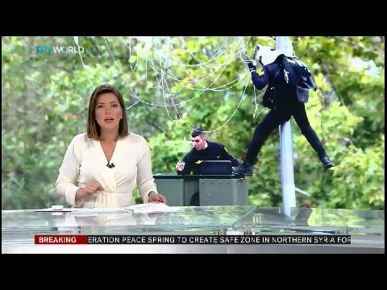

Spanish Lamppost
Videos of the paratrooper accident with the lamppost in the Spanish National Holiday at October 12

El farolazo español saliendo en el canal internacional TRT World con imagen en el pantallón del plató del paracaidista enganchado a la farola.

ÚLTIMA HORA: farola separatista ataca a héroe ESPAÑOL en el desfile de la Hispanidad de hoy.

LAS CARAS JUAN, LAS CARAS #farola #diadelahispanidad #12deoctubre